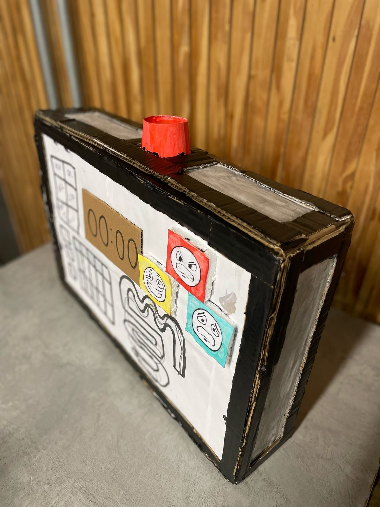

Interesses Profissionais
- Ganhar em dólar
- Trabalhar com IA
- Resolver problemas pontuais da sociedade
- Trabalhar com manipulação de dados
Artefato de Projeto 1
Acima é o protótipo funcional
Descrição
O "The Last Defuse" é um artefato eletrônico interativo inspirado diretamente no universo do jogo Keep Talking and Nobody Explodes. Construído com botões arcade, LEDs, uma tela de exibição e um microcontrolador Arduino, o dispositivo simula com fidelidade uma bomba de treinamento com múltiplos módulos que precisam ser desativados colaborativamente, promovendo tensão, cooperação e raciocínio rápido.
Componentes:
- Botões Arcade: Coloridos e de alta resistência, os botões servem como interface principal para a interação do usuário. Cada um representa uma função ou desafio específico, como corte de fios, sequências de código ou reconhecimento de padrões.
- Arduino (Uno/Nano/Mega): Responsável pelo controle lógico do dispositivo, o Arduino gerencia os módulos, verifica entradas, aciona efeitos sonoros e cronômetros, e controla os LEDs indicadores.
- LEDs Indicadores: Sinalizam o status dos módulos — verde para módulo resolvido, vermelho para erro, e piscantes para indicar atividade.
- Buzzer e Temporizador: Emitindo sons de alerta e contagem regressiva, esses elementos aumentam a imersão e a sensação de urgência durante a “desativação”.
- Gabinete Estético: O corpo do artefato é confeccionado com caixas robustas e visualmente chamativas, contendo fios expostos, etiquetas com códigos e mensagens enigmáticas — tudo projetado para lembrar uma bomba de cinema ou videogame, sem riscos reais, é claro.
Referência e Propósito:
Inspirado diretamente no jogo Keep Talking and Nobody Explodes, o dispositivo é utilizado em atividades educativas, experiências de escape room e eventos de entretenimento tecnológico. Ele recria o ambiente do jogo: uma pessoa manipula o artefato sem saber como resolvê-lo, enquanto os colegas, com o “manual” em mãos, devem instruí-la verbalmente. Isso estimula a comunicação, a cooperação sob pressão e o pensamento lógico.
Links para Estudo:
O que me inspira
A ideia de construir algo do zero: Nada inspira mais um estudante de Ciência da Computação do que transformar uma ideia em algo real. Começar com uma tela em branco e ver nascer, linha por linha, um projeto seu — seja um site, app ou jogo — é uma experiência poderosa. Criar do zero mostra que você é capaz de usar o que aprendeu para resolver problemas, inovar e até impactar outras pessoas. Além disso, ensina a lidar com erros, a ser persistente e a evoluir a cada tentativa. Não espere pela ideia perfeita. Comece pequeno. O importante é criar. Porque é nesse processo que você descobre o verdadeiro poder de programar.